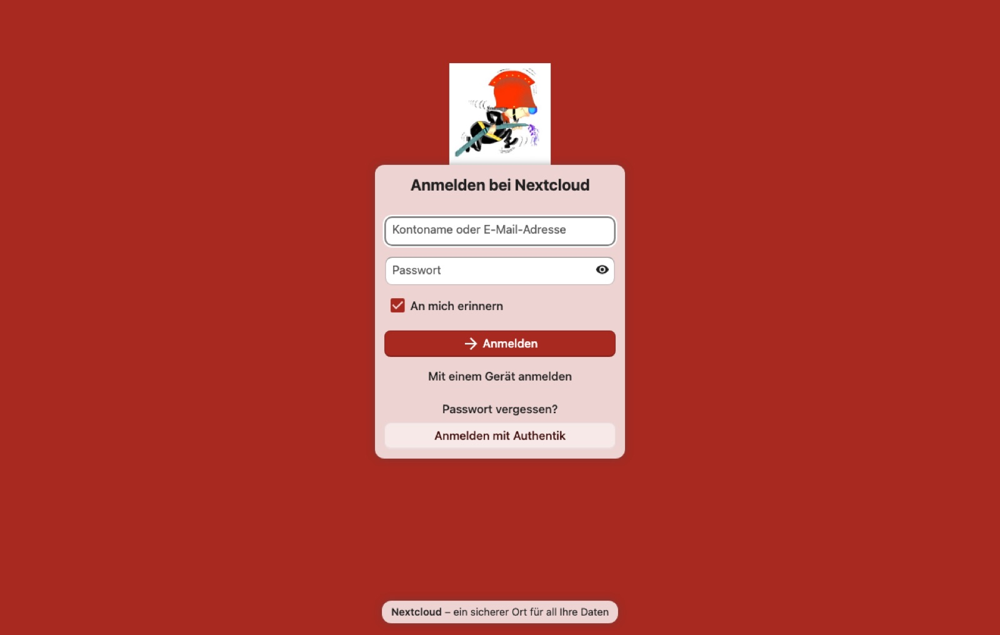
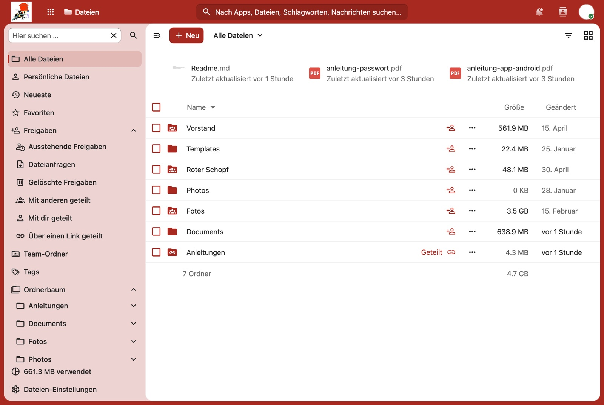
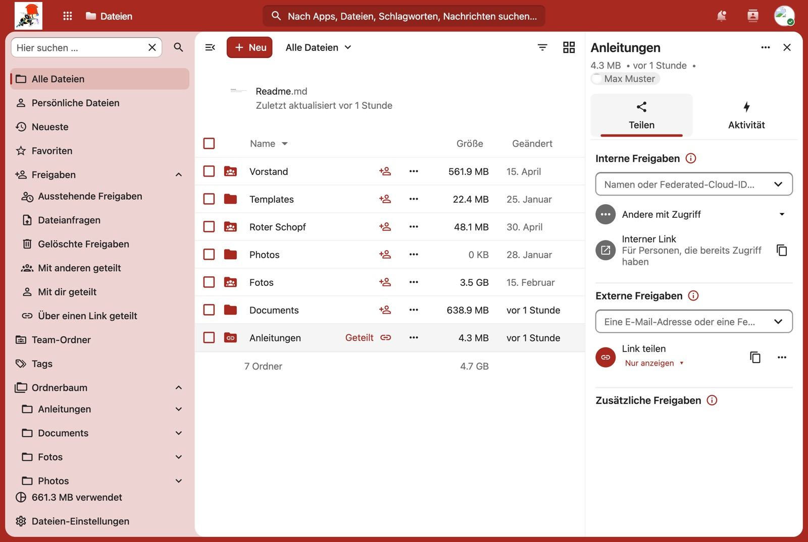

Der wichtigste Punkt zuerst: die Anmeldung
Die Vereins-Cloud liegt unter nextcloud.fwv-raura.ch.
Dort landest du auf einer Anmeldeseite mit zwei Feldern für Kontoname
und Passwort — und genau die brauchst du nicht.
nextcloud.fwv-raura.chaufrufen.- Ganz unten auf Anmelden mit Authentik klicken.
- Auf der Seite des Vereins mit deinem gewohnten Vereins-Login anmelden — dasselbe Konto wie in der App und im Mitgliederbereich.
- Fertig, du bist in der Cloud.
Warst du am selben Tag schon einmal angemeldet, geht es meist ohne Nachfrage durch — der Klick auf den Knopf genügt.

Die Ordner des Vereins
Nach der Anmeldung stehen die Dateien im Mittelpunkt. Was du dort siehst, hängt von deiner Funktion ab — die Ordner sind an Gruppen gebunden, nicht an einzelne Personen.
Für alle Mitglieder:
- Fotos — Bilder von Anlässen.
- Roter Schopf — Unterlagen rund ums Lokal.
- Anleitungen — unter anderem diese hier als PDF.
Dazu kommt für den Vorstand der Ordner Vorstand mit den Unterlagen der Vereinsführung.
Fehlt dir ein Ordner, den du erwartest, stimmt vermutlich deine Gruppenzugehörigkeit nicht. Das ist nichts, was du selbst richten kannst — melde dich beim Aktuar.

Hochladen, öffnen, teilen
Dateien hinzufügen
Der Knopf + oben legt neue Ordner an oder lädt Dateien hoch. Schneller geht es, indem du Dateien vom Rechner einfach ins Fenster ziehst.
Ansehen und bearbeiten
Ein Klick auf eine Datei öffnet sie direkt im Browser — Bilder und PDF ohne Umweg, Text- und Tabellendokumente in der eingebauten Bearbeitung. Herunterladen musst du dafür nichts.
Weitergeben
Über das Teilen-Symbol neben einer Datei erzeugst du einen Link, den du per Mail oder Chat verschicken kannst. Wer ihn hat, kommt an die Datei — auch ohne Vereinskonto.
Versehentlich gelöscht?
Gelöschte Dateien landen im Papierkorb und lassen sich von dort zurückholen. Und zu jeder Datei bewahrt Nextcloud frühere Fassungen auf — hast du ein Dokument überschrieben, kommst du über das Drei-Punkte-Menü an den Stand von vorher.

Auf dem Telefon
Es gibt eine Nextcloud-App für Android und iPhone. Damit hast du die Vereinsordner unterwegs dabei und kannst Fotos von einem Anlass gleich hochladen.
Auch dort gilt die Regel von oben: Nach der Eingabe
der Adresse nextcloud.fwv-raura.ch öffnet die App ein
Browserfenster. Dort erscheint dieselbe Anmeldeseite — und wieder
führt nur Anmelden mit Authentik zum Ziel.
Wenn es klemmt
„Falscher Benutzername oder falsches Passwort"
Du hast das obere Formular benutzt. Lade die Seite neu und nimm den Knopf Anmelden mit Authentik ganz unten.
Ich sehe keinen einzigen Vereinsordner
Dann fehlt deine Gruppenzugehörigkeit. Das passiert selten, ist aber
nichts, was du selbst beheben kannst — eine kurze Meldung an
aktuar@fwv-raura.ch genügt.
Ein Ordner ist plötzlich weg
Meist hat sich eine Funktion geändert — mit ihr die Gruppe und damit der Zugriff. Wenn das nicht sein sollte, melde dich.
Ich komme gar nicht bis zur Anmeldeseite
Prüfe die Adresse: nextcloud.fwv-raura.ch, ohne
www davor.